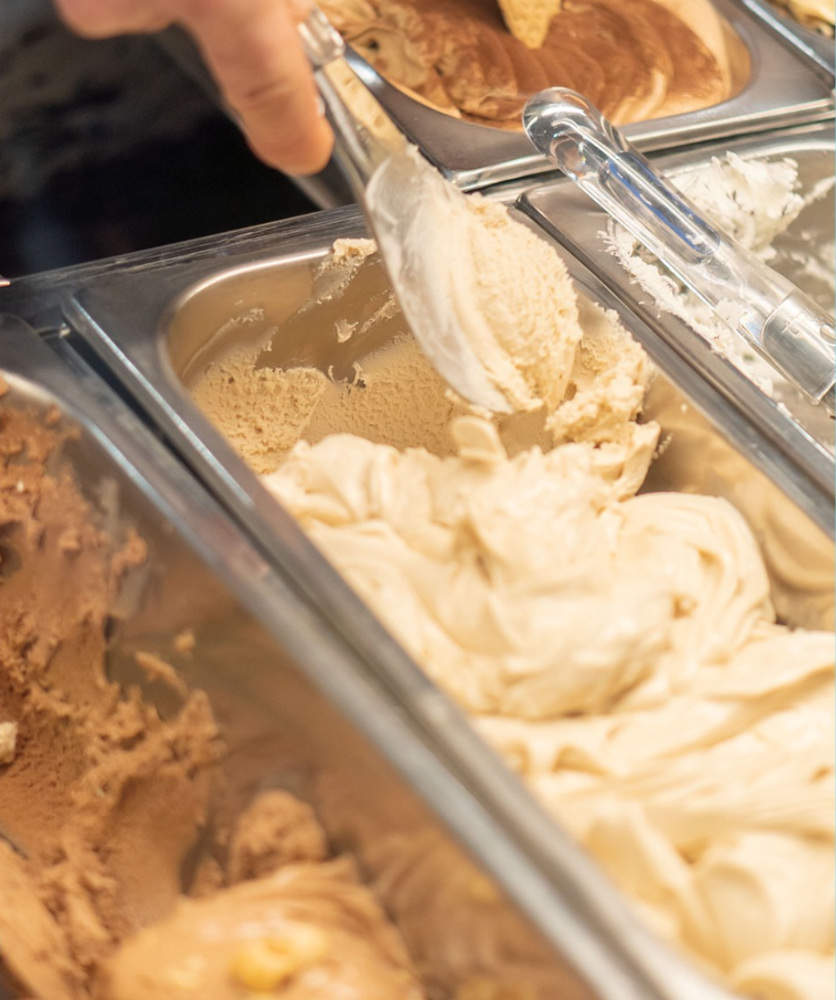

La Bottega del Gelato
Benvenuti nella nostra gelateria artigianale, nata nel 1989 è il luogo ideale per una pausa golosa durante la giornata o per una merenda con amici e familiari. La gelateria è famosa per la sua atmosfera accogliente e per la sua cortesia, che rendono ogni visita un'esperienza unica. Alla Bottega del gelato troverete sempre prodotti di alta qualità, preparati con ingredienti freschi e genuini, seguendo ricette tradizionali e innovative al tempo stesso. Offriamo una vasta scelta di gusti di gelato, dai più classici ai più particolari, ma sempre con la stessa attenzione per la qualità dei nostri ingredienti.
Orari
| Lunedì | Chiuso | ||||||
| Martedì-Venerdì | 14:30 - 22:00 | ||||||
| Sabato | 11:00 - 12:30/ 14:30 - 22:00 |
||||||
| Domenica | 11:00 - 22:00 | ||||||